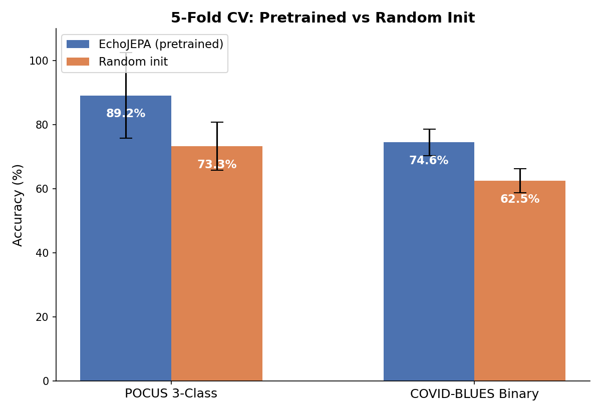
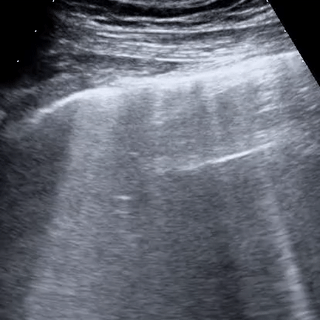

Cross-Anatomy Transfer from Cardiac Echo to Lung Ultrasound
Lung ultrasound datasets are tiny (<200 videos) while cardiac echo has 10K+ videos. EchoLung demonstrates that self-supervised models pretrained on cardiac videos achieve substantially better performance on downstream lung imaging tasks compared to random initialization.
Three-stage pipeline using V-JEPA2 ViT-L backbone:
The frozen cardiac representations transfer effectively despite the anatomical domain shift between heart and lung ultrasound.
| Task | Pretrained | Random Init | Gain |
|---|---|---|---|
| POCUS 3-class | 97.5% ± 2.3% | 73.3% | +24.2pp |
| COVID-BLUES binary | 75.2% ± 5.3% | 63.3% | +11.9pp |
| Severity scoring | 7.9% | — | Negative result |
Both gains are statistically significant (p < 0.01) with Cohen’s d > 2.4. Evaluated with 5-fold cross-validation, confusion matrices, AUC-ROC, Cohen’s kappa, and MCC.

Cross-validated pretrained vs. random initialization performance

Sample POCUS lung ultrasound video used for classification
Severity classification achieved only 7.9% accuracy. The frozen cardiac representations lack the granular B-line quantification patterns necessary for COVID severity scoring — a useful finding for understanding representation transfer limitations.